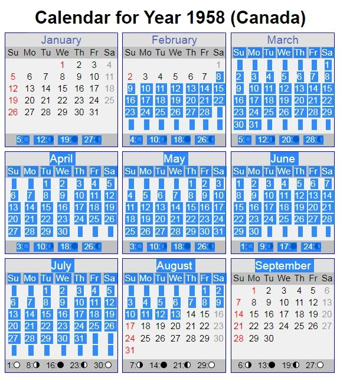

Bruce Mungo Dand and Doris Elva Dand,
Wedding Day, February 8, 1958

This page prefers large desktop monitors. Your browser will scale the picture down to your screen width.
The actual photo is much larger. Scan of the original at 400 dpi. Saved as jpeg. (9.93 MB) 3134 x 3959 pixels.

Notes about the Original Photo
- Original photo is 7 ⅞" x 9 ⅞"
- Placed behind a mat measuring 6 ¾" x 9 ⅛"
- Colour film was very expensive in 1958.
- It was common for career photographers to take photos in black and white,
and have the photo coloured in a photo lab.
- Explains why there is turquoise spilled onto the photo border.
- The person who applied the colour likely won't have known their hair colours.
- Dad was jet black and Mom was a dirty blonde,
although on occasion, Mom did dye her hair this colour in her 30's and 40's.
|
Work Done
- Fix damage done by insects and mold.
- Increase canvas size to 3168 x 3960,
mathematical correct for 1.25 ratio.
- Scaleable for a 8 x 10 inch portrait frame.
- Increased background on the top and left side.
- Enhanced colour in the bouquet.
- Highlight the definition in the lace pattern in Mom's dress.
- Smoothed out the grain in the photo paper,
mostly just in the turquoise background and Dad's black suit.
|
|
To save this file for your own use: right click, save as, leave as png.
Save to desired location. Warning: Its a large file. (21.2 MB)
Take to or upload to your favorite photo processor,
Walmart, Staples or whoever for a 8" x 10" print.
Or... scroll to the bottom and choose the next copy.
|

Left to right: Miriam Mitten, the wedding couple and Roy Dand
|
|
 |
Apparently.....
I'm also in the picture.
Pun intended.
|
|
Miriam taught school with Mom in Coleville.
Mom actually dated Roy before Dad.
This photo is 10" x 8".
3940 x 3152 pixels
|
|

|
|
Did I go to far with this photo?
- More Edits
- Changed both their hair colours.
- Changed Mom's eye colour.
- Put definition into their eyes.
- Put contrast into Mom's veil.
- Coloured Dad's glasses black.
- Added colour to Mom's lipstick.
|
|